Roman Mythology
Roman mythology is the collection of myths and legends belonging to ancient Rome. It encompasses the stories, deities, and beliefs that were integral to Roman culture and religion. Roman mythology was heavily influenced by Greek mythology, with many Roman gods and goddesses being adapted from their Greek counterparts, though they often took on unique characteristics and attributes.
The city of Rome
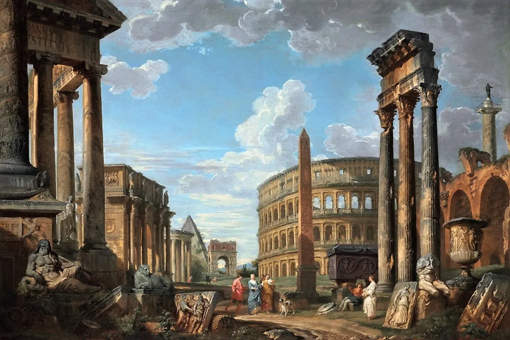
Rome itself is a central setting in Roman mythology. Many myths are set in and around the city, particularly those concerning its foundation and early history, such as the stories of Romulus and Remus. The city’s various hills, forums, and temples often feature in these narratives.
Story
The Founding of Rome: Romulus and Remus
In ancient times, a powerful king named Amulius usurped the throne of Alba Longa, forcing his brother's daughter, Rhea Silvia, to become a Vestal Virgin, thereby preventing her from having children.
Despite this, Rhea Silvia gave birth to twin sons, Romulus and Remus, fathered by Mars, the god of war.
Fearing for his power, Amulius ordered the twins to be drowned in the Tiber River. However, the river's current carried them to safety, where they were discovered by a she-wolf.
The she-wolf nursed and cared for them in her den until a shepherd named Faustulus found them. He and his wife raised the boys as their own.
When Romulus and Remus grew up, they learned of their true heritage and decided to found a city of their own. They chose a site near the Tiber River.
However, a dispute arose between them over the location and leadership of the new city.
Romulus wanted to build on the Palatine Hill, while Remus preferred the Aventine Hill.
The argument escalated, leading to violence. In the ensuing conflict, Romulus killed Remus.
Roman Gods
Jupiter (Zeus)
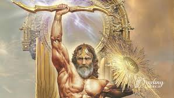
King of the gods, Jupiter ruled the sky and thunder. He was the supreme deity in the Roman pantheon, associated with law, order, and justice.
Juno (Hera)
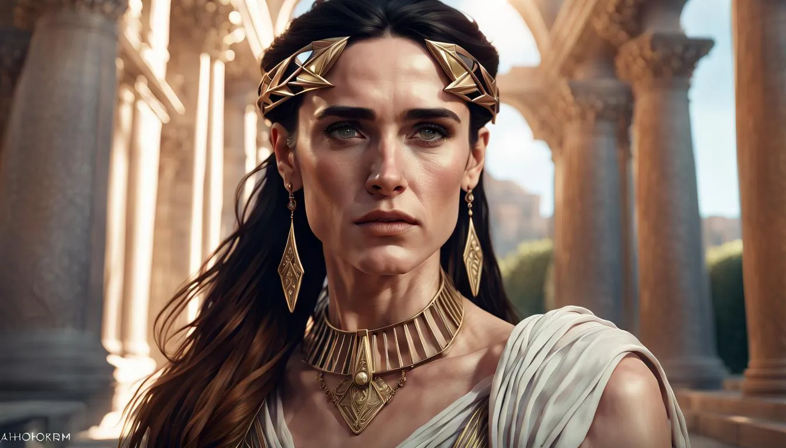
The queen of the gods and wife of Jupiter, Juno was the goddess of marriage and childbirth. She was also known for her protectiveness over women and her role as a guardian of the state.
Neptune (Poseidon)
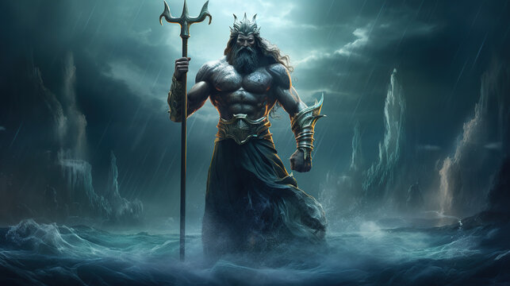
God of the sea, earthquakes, and horses, Neptune wielded a trident and was considered a powerful deity of the natural world.
Mars (Ares)
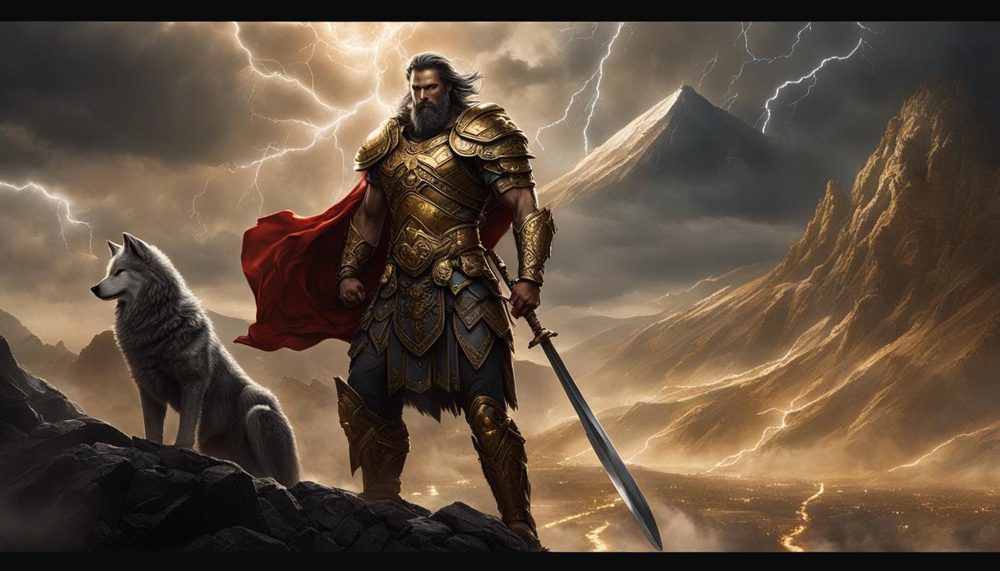
The god of war and combat, Mars was associated with military power and aggression. Unlike his Greek counterpart, Mars was also revered as a guardian of agriculture and fertility.
Venus (Aphrodite)
Goddess of love, beauty, and fertility, Venus had a significant influence over matters of the heart and desire. She was also considered an ancestor of the Roman people through her son Aeneas.
Minerva (Athena)
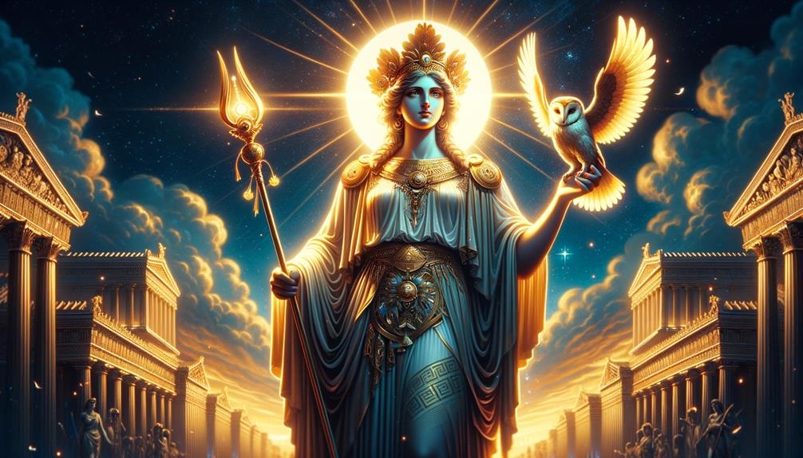
Goddess of wisdom, war strategy, and crafts, Minerva was associated with intellectual and artistic pursuits. She was also a protector of the city and its people.
Diana (Artemis)
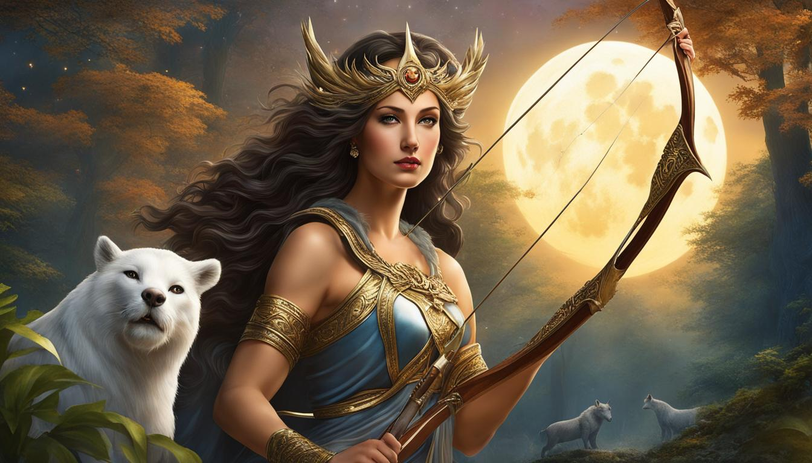
Goddess of the hunt, wilderness, and childbirth, Diana was associated with the moon and was often depicted with a bow and arrows.
Vesta (Hestia)
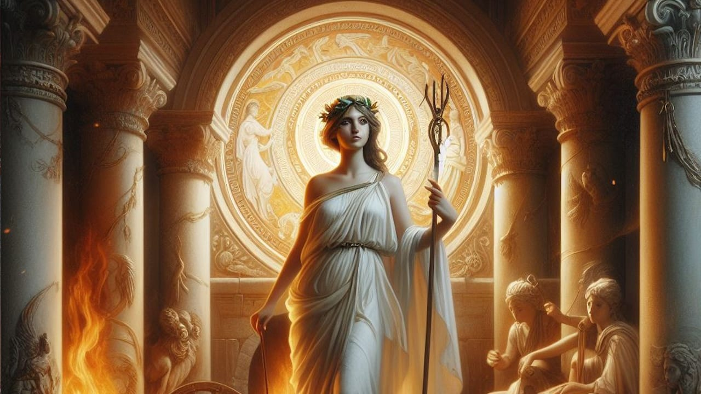
Goddess of the hearth and home, Vesta was worshiped as the guardian of domestic life and the Roman state’s sacred fire. The Vestal Virgins tended her eternal flame.
Mercury (Hermes)

The messenger of the gods, Mercury was also the god of commerce, travel, and thievery. He was depicted with winged sandals and a caduceus (a staff entwined with serpents).
Ceres (Demeter)
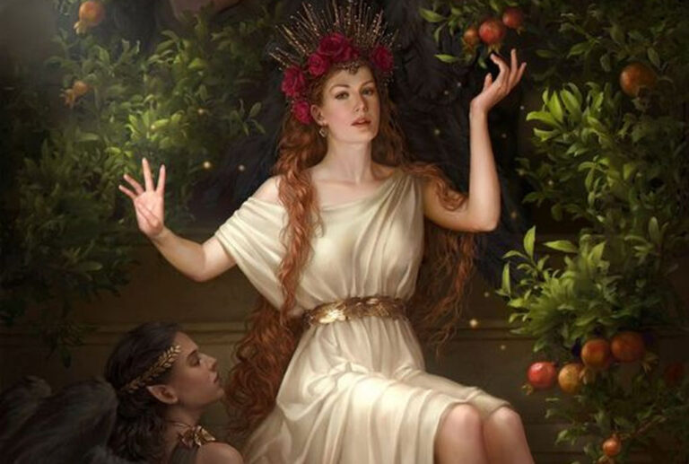
Goddess of agriculture, grain, and fertility, Ceres was essential to farming and the growth of crops. Her mythology includes the famous story of her daughter Proserpina (Persephone) and her annual return from the Underworld.
Bacchus (Dionysus)
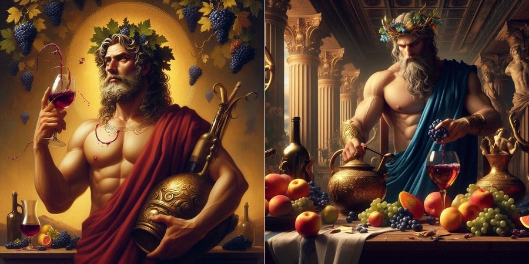
God of wine, revelry, and ecstasy, Bacchus was associated with the pleasures of life and the liberating effects of wine. His festivals were marked by theatrical performances and wild celebrations.
Pluto (Hades)
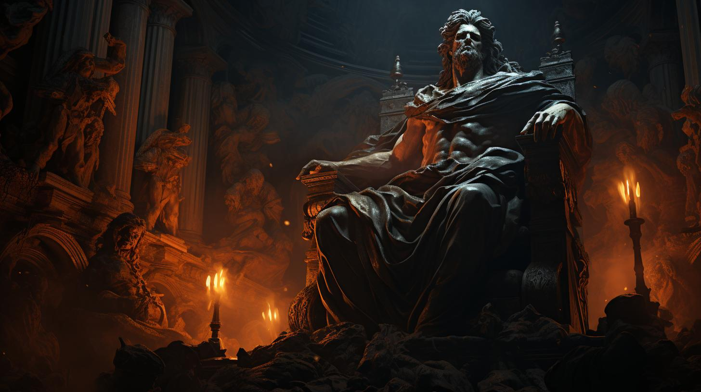
Ruler of the Underworld, Pluto presided over the dead and was associated with wealth found underground, such as minerals and fertile soil.
About
Roman mythology is a rich tapestry of ancient tales, deities, and religious practices that shaped the cultural and spiritual life of Rome.
It features a pantheon of gods and goddesses, such as Jupiter, the king of the gods; Juno, the goddess of marriage; and Neptune, the god of the sea.
These deities influenced every aspect of Roman life, from agriculture to warfare.
Central myths include the legendary founding of Rome by Romulus and Remus and the epic journey of Aeneas from Troy to Italy, as recounted in Virgil's "Aeneid."
Roman mythology intertwined with state rituals, festivals, and daily life, reflecting the values and beliefs of one of history's most influential civilizations.